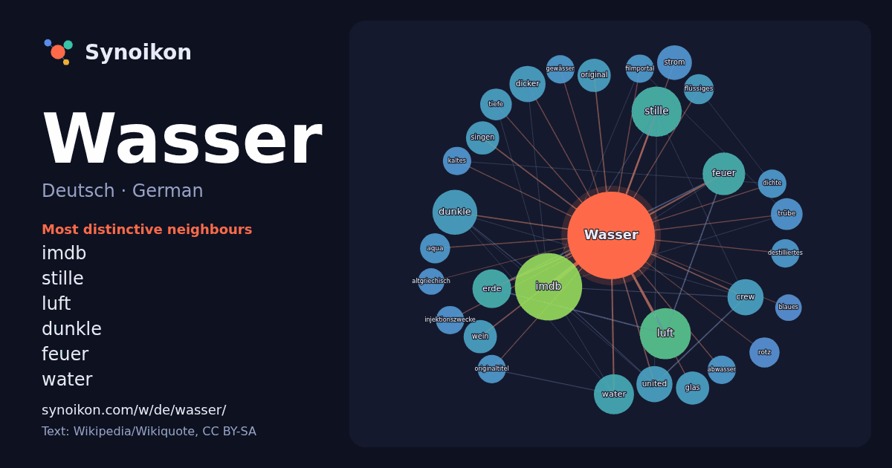

Deutsch · German · popular word
Wasser
“water” · The words found around it in 1250 instances from German Wikipedia, Wikiquote.

Most distinctive neighbours
- imdb 46×
- stille 25×
- luft 23×
- dunkle 20×
- feuer 16×
- water 16×
- dicker 14×
- crew 13×
- erde 12×
- strom 12×
- glas 11×
- singen 11×
- trübe 11×
- wein 11×
- original 11×
- rotz 10.0×
- aqua 9.9×
- flüssiges 9.9×
- united 9.9×
- tiefe 9.2×
× = how many times more often than in general German Wikipedia text.
Most frequent neighbours
- imdb 45
- luft 26
- stille 25
- dunkle 20
- feuer 18
- lebens 18
- water 16
- erde 15
- film 15
- deutschland 14
- crew 13
- dicker 13
- united 13
- strom 12
- deutscher 11
- glas 11
- original 11
- singen 11
- titel 11
- wein 11
In context
- der Natur kommt Wasser selten rein vor, sondern enthält meist gelöste Anteile von Salzen, Gasen und organischen Verbindungen. Wasser ist die Grundlage Wikipedia snippets · Wasser
- Belebtes Wasser, auch als levitiertes, vitalisiertes, informiertes, strukturiertes, hexagonales oder Granderwasser bezeichnet, ist Wasser, das laut der Wikipedia snippets · Belebtes Wasser
- erklärte sich Netflix 2023 zur Umsetzung von Im Wasser der Seine bereit. Gens selbst beschrieb Im Wasser der Seine als ökologische Fabel, mit der er die Wikipedia snippets · Im Wasser der Seine
- hier ist Wasser / This is Water: Anstiftung zum Denken. KiWi-Paperbacks, Köln 2012, ISBN 978-3-462-04418-8. This Is Water / Das hier ist Wasser (Sonderedition): Wikipedia snippets · Das hier ist Wasser
- Destilliertes Wasser (auch lateinisch Aqua destillata) ist Wasser (H2O), das durch Destillation von den im normalen Quellwasser oder Leitungswasser vorkommenden Wikipedia snippets · Destilliertes Wasser
- Schweres Wasser (Deuteriumoxid) ist chemisch gesehen Wasser mit der Summenformel D2O. Von üblichem Wasser H2O, das in diesem Zusammenhang auch als „leichtes Wikipedia snippets · Schweres Wasser
- des Wassers. Wasser ohne Metallionen kann im Labor und in der Technik durch Destillation hergestellt werden und wird destilliertes Wasser genannt. Zumeist Wikipedia snippets · Eigenschaften des Wassers
- Heiko Waßer, auch Heiko Wasser (* 3. Oktober 1957 in Gladbeck) ist ein deutscher Sportjournalist. Er ist Kommentator der Formel-1-Rennen bei RTL. Ab 1976 Wikipedia snippets · Heiko Waßer
More German words
- Arbeit
- Brücke
- Essen
- Familie
- Geld
- Geschichte
- Gesundheit
- Gold
- Gott
- Kunst
- Leben
- Macht
- Natur
- Tod
- Wahrheit
- Wissenschaft
- Zug
Precomputed on 2026-10-09 with default settings (±5 words, medium corpus). The interactive map can refresh it with live data.